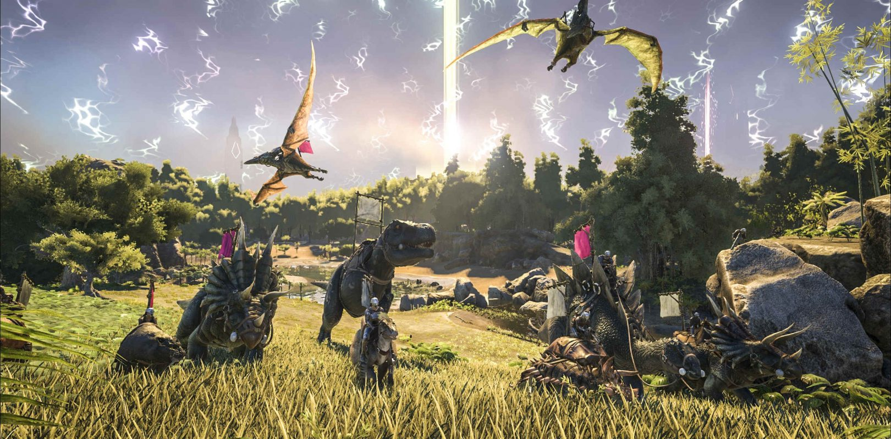
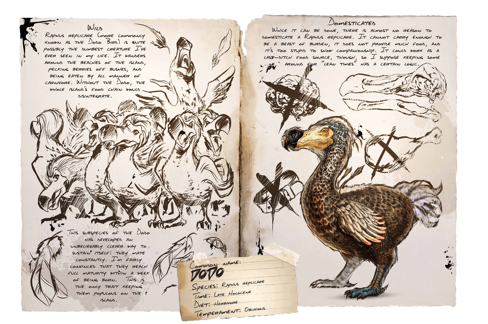

ARKSURVIVALEVOLVED
Ark: Survival Evolved es un videojuego de supervivencia y sandbox desarrollado por el equipo de Studio Wildcard. Los jugadores aparecen en un mundo salvaje y lleno de dinosaurios. A partir de ese momento, tendrán que buscar los métodos para sobrevivir y no morir de hambre, sed o frío. De esta forma, los jugadores podrán construir refugios, aliarse entre ellos y domar a aquellos dinosaurios que consideren apropiados para que les ayuden a combatir o a desplazarse por el mundo salvaje. Además, el juego cuenta con un sistema de crafteo que permite, no sólo mejorar las armas y utensilios sino, además, ayuda a que el personaje avance de época y tenga acceso a nuevas herramientas. Esto ayudará a tomar ventaja sobre los contrincantes y que la supervivencia resulte más y más sencilla conforme avancemos. Así mismo, habrá criaturas legendarias que requerirán que llevemos buen equipamiento si queremos capturarlas. 'Ark: Survival Evolved' está disponible en PlayStation 4, Xbox One y PC.

Los dosiéres de Dinosaurios es una colección de notas sobre las distintas criaturas de ARK: Survival Evolved. Puedes encontrarlos diseminados por los paisajes de The Island,Scorched Earth y Aberration entre otros coleccionables como Notas de Explorador. Los expedientes informan sobre el comportamiento y hábitos de todas las criaturas presentes en ARK, escritos por la superviviente Helena, que en su mayoría sus observaciones corresponden. Casi todas las criaturas pueden ser domesticadas a exepcion de criaturas especiales como los bosses entre otra, pero difieren en qué y cuánto necesita comer la criatura para poder domesticarse. Un ejemplo de un Dosier es:

Christian Solis Lara